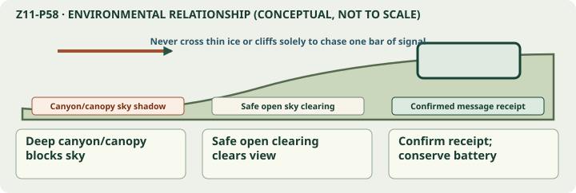

Z11-P58 · Navigation, weather and rescue · New manuscript
Maximize satellite and cellular transmission success under canopy or canyons
Overcome terrain shadows, wet forest canopy and weak batteries when sending critical distress messages.
When it applies · Attempting cellular 911 calls, SMS texts, satellite messenger updates or PLB alerts in rugged terrain.
Equipment · Phone, satellite communicator or PLB, warm inner pocket and offline location notes.

Actions
- Move only to a nearby SAFE open clearing or elevated dry spot (never onto cliffs, avalanche slopes or thin ice) to maximize unobstructed sky view for satellites or line-of-sight toward distant cell towers.[N05, T06, E12]
- Keep antennas oriented per manufacturer guidance clear of your body, wet pack fabric and rock overhangs, and leave satellite devices undisturbed in clear sky for 15–30 minutes if initial fixes lag under partial canopy.[N05, ED]
- For weak cellular service, prefer brief SMS text messages (which can queue and send on fleeting signal bars) over voice calls, keep devices warm against body heat and disable background apps to preserve battery.[T11, E02, ED]
Failure recognition · Holding a satellite messenger flat inside a tent under wet spruce trees for 60 seconds, assuming SOS sent, and turning it off.[N05, T06]
Verify · Confirm clear sky hemisphere around the antenna and verify explicit "message sent/acknowledged" confirmation on two-way devices before packing away.[N05, T11, ED]
Stop or change course · Never leave a safe sheltered site or cross hazardous terrain solely to hunt for one bar of cell signal.[T06, E12, N09]
Evidence and editorial notes
- E02 · NPS · Ten Essentials (current web edition)
- Section: Navigation; insulation; emergency shelter; emergency food and water · Conditions: Outdoor trips; adjust kit to season and route
Support: Carry essential systems including navigation, insulation, light, water and emergency shelter.
Limitations: Carrying items without practice or cold-weather verification does not ensure readiness. · Conflicting evidence: None; baseline kit system architecture.
Editorial note: Supports failure-mode packing and kit verification cards. · Specialist reviewer: Field education and search and rescue
Primary source · checked 2026-11-24 - E12 · Minnesota DNR · Ice Safety (current web edition)
- Section: Ice Safety > basic precautions · Conditions: Minnesota ice edges and travel routes
Support: No ice is universally safe. Strength can differ over short distances; appearance or tracks alone cannot establish a safe crossing.
Limitations: Currents, springs, snow insulation, and freeze-thaw cycles weaken ice invisibly. · Conflicting evidence: None; mandates shore-bound detour for foundational walking parties.
Editorial note: Maintains strict separation from specialized B013 ice chapters. · Specialist reviewer: Ice safety and search and rescue
Primary source · checked 2026-11-24 - N05 · NOAA · Search and Rescue Satellite Aided Tracking (SARSAT) (current web edition)
- Section: SARSAT Beacons > PLB, EPIRB and Registration · Conditions: Emergency satellite distress signaling (406 MHz PLBs and EPIRBs)
Support: Registered 406 MHz Personal Locator Beacons transmit distress alerts via NOAA SARSAT satellites directly to rescue coordination centers with no subscription; registration with NOAA is legally required and must stay current.
Limitations: PLBs are one-way distress alerts only (no two-way texting), require clear sky view and must be reserved for grave and imminent danger. · Conflicting evidence: Distinguishes one-way 406 MHz PLBs from commercial two-way satellite messengers.
Editorial note: Anchors beacon selection, sky-view limits and registration cards in Z11. · Specialist reviewer: Search and rescue and emergency communications
Primary source · checked 2026-11-24 - N09 · NPS · Outdoor Emergency Plan (current web edition)
- Section: Outdoor Emergency Plan > Signaling, Lost-Person Protocol and SAR Handoff · Conditions: Lost or overdue party awaiting search and rescue
Support: Stay put once lost unless immediate danger requires moving to nearby safer ground; preserve footprints/clues, make visible contrast signals in open clearings, answer whistle/voice calls and stay ready for responder instructions.
Limitations: Unplanned wandering expands search radius exponentially and delays rescue contact. · Conflicting evidence: None; reinforces B014-P16, P17 and P20.
Editorial note: Core evidence for lost-person psychology, signaling and SAR coordination cards. · Specialist reviewer: Search and rescue
Primary source · checked 2026-11-24 - T06 · NPS · Outdoor Emergency Plan (current web edition)
- Section: If you get lost or hurt; call for help · Conditions: Outdoor US emergency
Support: Communicate location, last known point, situation and needs. Stay put when unable to establish a safe route unless immediate danger requires movement.
Limitations: Cell signal is unreliable in backcountry terrain; pre-trip plans bridge communication gaps. · Conflicting evidence: None; core lost-person decision rule.
Editorial note: Foundation for stay/signal/move and dispatch handoff cards. · Specialist reviewer: Search and rescue
Primary source · checked 2026-11-24 - T11 · FEMA / Ready.gov · Make a Plan (current web edition)
- Section: Make a Plan > Family Emergency Communication Plan · Conditions: Households and traveling groups preparing for disruptions
Support: Record out-of-area contacts, local meeting places, medical/allergy summaries, and alternate communication channels (text vs voice) in paper and offline formats; practice the plan periodically.
Limitations: Cellular networks often congest during disasters while SMS or out-of-area contacts may still connect. · Conflicting evidence: None; complements outdoor trip-plan cards.
Editorial note: Anchors emergency communication protocols and group contingency plans. · Specialist reviewer: Emergency management and communications
Primary source · checked 2026-11-24
Source lineage · NOAA SARSAT and Ready.gov communication plan; new manuscript · Classification · New manuscript.